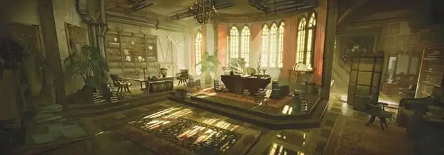

Археолог
Archaeologist

Археологи много узнают о давно затерянных империях и культурах, изучая их останки – кости, руины, оставшиеся после них предметы быта и гробницы.
Те, кто посвятили свою жизнь археологии, отправляются в разные уголки мира, чтобы исследовать разрушенные города и затерянные подземелья, копаться в земле ради ценных артефактов, которые смогут рассказать историю о монархах и верховных жрецах, войнах и катаклизмах.
Владение навыками: История, Выживание.
Владение инструментами: Инструменты картографа или инструменты навигатора.
Владение языками: Один на ваш выбор;
Снаряжение: Деревянный тубус, содержащий карту затерянного города или подземелья, фонарь, кирка, комплект дорожной одежды, лопата, двухместная палатка, одна безделушка с последних раскопок и кошель с 25 зм.
Искатель
Прежде чем встать на путь искателя приключений, вы провели большую часть взрослой жизни, копаясь в пыли в поисках реликвий, обладающих весьма сомнительной ценностью. Вам удалось продать несколько интересных экземпляров, что позволило вам купить хорошее снаряжение для начала пути приключенца. Один из предметов представляет для вас особую эмоциональную ценность. Выберите его из таблицы Ценные предметы или бросьте кость, чтобы определить случайно.
Ценные предметы
Умение: Исторические знания
Когда вы входите в руины или подземелье, вы можете с уверенностью определить их первоначальное предназначение и создателей, если они являются представителями дварфов, эльфов, людей, юань-ти и других известных рас. Также вы можете прикинуть стоимость предмета, которому более века.
Персонализация
Лишь немногие археологи смогут удержаться от желания исследовать затерянные руины или подземелья, особенно если дело касается легенд и слухов о несметных сокровищах чародеев, военачальников или королевских семей. Некоторые археологи гонятся за славой или богатством, другие считают себя некими светочами, у которых есть шанс представить миру забытое прошлое или скрыть от сообщества сокровище, которое не должно оказаться в плохих руках.
Вне зависимости от мотивации, археологи сочетают в себе качества умудрённого опытом историка, смешанного с отчаянным героизмом и неудержимой тягой к охоте за сокровищами.
| к8 | Черта характера |
| 1 | Мне нравятся хорошие загадки и тайны. |
| 2 | Я храню всё и никогда ничего не выбрасываю. |
| 3 | Слава для меня важнее, чем деньги. |
| 4 | Я не чураюсь забрать что-то у мёртвого. |
| 5 | В пыльной гробнице я чувствую себя счастливее, чем в самом сердце цивилизации. |
| 6 | Ловушки меня не беспокоят. Меня беспокоят идиоты, которые их активируют. |
| 7 | Неудачи случаются, но я никогда не сдамся! |
| 8 | Пусть я и похож на ботаника, но люблю хорошую драку. Эти кулаки созданы для выбивания дури. |
| к6 | Идеал |
| 1 | Сохранение. Этот артефакт принадлежит музею. (Добрый) |
| 2 | Жадность. Я не буду рисковать своей жизнью просто так. Я ожидаю оплаты за это. (Любой) |
| 3 | Жажда смерти. Нет ничего более захватывающего, чем побег из лап смерти. (Хаотичный) |
| 4 | Достоинство. К мёртвым и их имуществу нужно относиться с должным уважением. (Законный) |
| 5 | Бессмертие. Все мои похождения связаны с поиском секретов вечной жизни. (Любой) |
| 6 | Опасность. С любым крупным открытием приходит и большая опасность. Два зайца одним махом (Любой) |
| к6 | Привязанность |
| 1 | С раннего детства я слушал рассказы о затерянном городе. Я найду его, разгадаю его секреты и займу своё место в анналах истории. |
| 2 | Я хочу найти своего учителя, который пропал во время экспедиции некоторое время назад. |
| 3 | У меня есть друг-соперник. Только один из нас сможет стать самым лучшим. Я докажу, что им стану я. |
| 4 | Я не буду продавать предмет искусства или другое сокровище, если оно имеет культурную ценность. |
| 5 | Я тайно влюблён в того, кто выделяет средства для моих археологических экспедиций. |
| 6 | Я хочу принести славу библиотеке, музею или университету. |
| к6 | Слабость |
| 1 | Я в тайне боюсь одного из обычных диких животных. На своей работе я вижу их постоянно. |
| 2 | Я не могу уйти из комнаты, не попытавшись найти потайную дверь. |
| 3 | Если я не исследую древние руины или подземелья, то становлюсь нервным и нетерпеливым. |
| 4 | У меня нет времени на друзей или семью. Каждую свободную минуту я трачу на подготовку или обдумывание своей следующей экспедиции. |
| 5 | Когда есть выбор, идти направо или налево, я всегда выбираю налево. |
| 6 | Я могу уснуть только в полной темноте. |